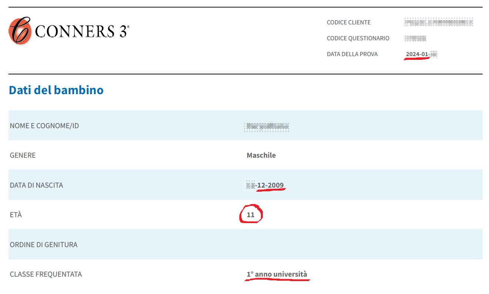
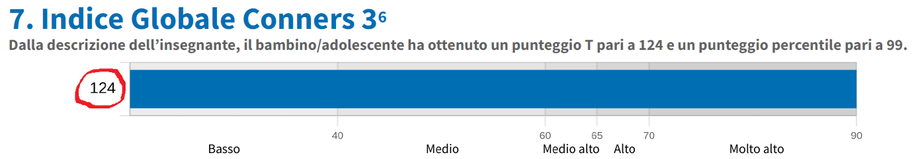
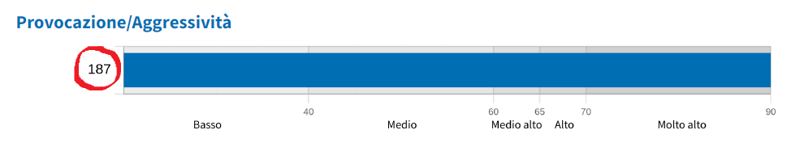
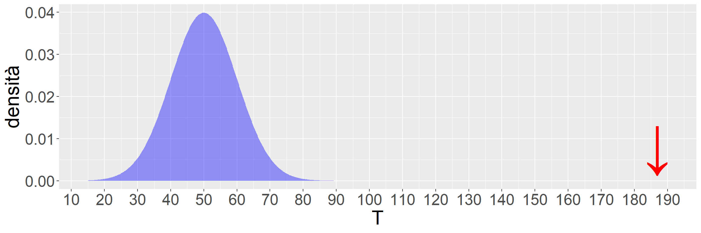
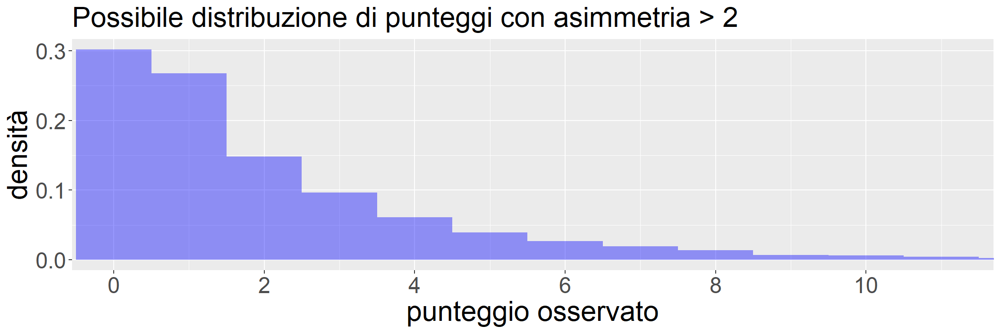
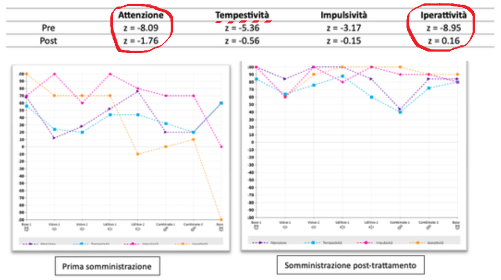
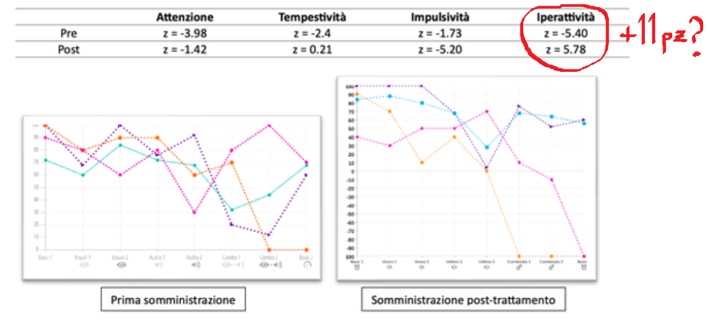

ovvero, se dubitiamo del testing quando è trasparente, figuriamoci quando non lo è
Styck e Walsh (2016), meta-analisi di 27 studi: in media il 99.7% dei protocolli Wechsler contiene almeno un errore
MA… scende a 41.2% escludendo mera omissione trascrizione
MA… i professionisti hanno meno rischio di farne almeno uno (34% vs 70% esclusa omissione trascrizione)
MA… protocolli ri-corretti cambiano mediamente \(\pm 1\) punto di QI
MA… varianza molto maggiore (SE \(\approx\) \(\pm 5\) punti QI) sembra dipendere da effetto/bias somministratore (McDermott et al., 2014), non risolvibile da scoring online
Styck e Walsh (2016), meta-analisi di 27 studi: in media il 99.7% dei protocolli Wechsler contiene almeno un errore
MA… scende a 41.2% escludendo mera omissione trascrizione
MA… i professionisti hanno meno rischio di farne almeno uno (34% vs 70% esclusa omissione trascrizione)
MA… protocolli ri-corretti cambiano mediamente \(\pm 1\) punto di QI
MA… varianza molto maggiore (SE \(\approx\) \(\pm 5\) punti QI) sembra dipendere da effetto/bias somministratore (McDermott et al., 2014), non risolvibile con scoring online
Cosa sappiamo e cosa non sappiamo delle caratteristiche psicometriche di alcuni strumenti di ampio uso:
Disclaimer: l’elenco NON è esaustivo degli strumenti con possibili problematicità; l’elenco NON implica che le alternative siano necessariamente migliori; la selezione è basata primariamente su esperienza personale; si invitano caldamente gli interessati a verificare autonomamente le informazioni riportate

test effettuato a gennaio 2024 su psy-portal.giuntitesting.com


selezione da protocolli di casi reali segnalati a marzo 2024
T = 187 corrisponde a z = +13.7: se facesse riferimento alla curva Gaussiana, dovrebbe esistere meno di un caso su un milione di miliardi di miliardi di miliardi di miliardi di persone (1 / 1042)
Ricevo un manuale (2017) che mi permette effettivamente di ricalcolare (esempio virtuoso!) T = 187 / z = +13.7… basandomi su un sottocampione di n = 24 (in base a età e genere). I valori di asimmetria per alcune scale raggiungono e superano 2
(perdonate il pippozzo)
La metrica dei punti T e z è interpretabile solo rispetto alla curva Gaussiana, dove Media e Deviazione Standard sono effettivamente parametri che governano la distribuzione
Altrimenti… sì, potete sempre calcolare T e z, ma non vi dicono la collocazione della persona nella popolazione rispetto al costrutto di interesse (es. “provocazione / aggressività”), ma solo del suo punteggio rispetto agli altri punteggi che, date certe distribuzioni estremamente asimmetriche, riflettono in modo forte le caratteristiche della prova (ma a noi interessa la persona)
Scoring online non corregge né segnala palesi incongruenze dovute a errore umano (almeno a gennaio 2024), mancando uno dei suoi principali vantaggi
Distribuzioni estremamente asimmetriche, e tuttavia scoring basato su punti T (punti z); inoltre, il manuale “valida” numerosi modelli fattoriali EFA e CFA (che assumono normalità) a 4 e 5 fattori usando questi punteggi
Dati normativi trasparenti, ma sottocampioni estremamente piccoli (molti n = 10 — 40 osservazioni) su cui si basano dati normativi, senza continuous norming
Esempio parzialmente virtuoso di trasparenza (fornisce tabelle conversione grezzo-ponderato, ma non statistiche descrittive complete), la WISC-IV permette indirettamente di valutare traiettorie di sviluppo
Traiettorie UK curvilinee come ci si aspetta tipicamente e teoricamente (e coerentemente con le norme americane); quelle italiane invece sembrano “stranamente” lineari.
“un individuo [tra gli 11 e i 14 anni] con un punteggio in media in Inghilterra, confrontato con norme italiane avrebbe un indice di ragionamento percettivo compreso tra 111 e 117 (…) e di QI tra 105 e 106 (…)” (Giofrè et al., 2017, p. 150)
La versione per prescolari (WPPSI-IV) potrebbe anch’essa sovrastimare, secondo un recente report, per motivi diversi
Del vero “oggetto della contesa” sappiamo poco: non abbiamo le statistiche descrittive dei dati grezzi (a febbraio 2024 risultavano riportate solo per i ponderati, che sono poco utili), né le matrici di correlazione divise per fascia di età (solo la complessiva), né le tabelle di conversione grezzo-ponderato. Questo rende impossibile indagare traiettorie di sviluppo, sapere se overfittano, valutarle rispetto a traiettorie attese, fare qualsiasi double check delle norme, o verificare l’invarianza di misura per età
WISC-IV e WPPSI-IV potrebbero sovrastimare QI; impressione clinica con WISC-IV conferma che subtest percettivi sono “troppo spesso” punti di forza, indipendentemente da condizione clinica
Dati normativi forniti sono al meglio parziali (WISC-IV: conversione grezzo-ponderato, no statistiche descrittive base), al peggio del tutto assenti (WISC-V), costringendo a cieca fiducia nella casa editrice e nel suo scoring online
WISC-V: comunità accademica e professionale non ha modo di effettuare verifiche indipendenti della qualità psicometrica in base a informazioni pubblicamente disponibili
Se pensiamo a nomi “Raven” e “Wechsler”: sì, ci sono diritti di copyright esclusivi
… ma se intendiamo “fattore g” o “teoria CHC” o “modello gerarchico”, ovviamente NO!
disclaimer: fornisce conversione grezzo-ponderato in chiaro, ma NON tutte le statistiche descrittive
Per ultimo, Moxo d-CPT (Hogrefe):
prova computerizzata, scoring online; manuale fornisce statistiche descrittive, ma solo basate su continuous norming, non quelle osservate, per indici principali (non per sottoindici); clinici riferiscono che piattaforma di scoring NON restituisce punteggi grezzi dei pazienti valutati!
fornisce 4 indici ma non include modelli fattoriali né statistiche sufficienti per validarli;
promette ottima capacità diagnostica per ADHD (punteggio combinato, AUC = 0.91)
“MOXO (…) appeared as an outlier compared to the other CPT versions (…) When taken at face-value, our analyses suggest a higher accuracy for the MOXO compared to other CPTs. However, our confidence in this difference is low and might not replicate in future studies (…) the studies on the MOXO had a high risk of bias (…) was likely to have inflated the clinical utility measures. Additionally, authors of MOXO studies were involved in its development and commercialization, suggesting a direct conflict of interest” [NOTA: l’eventuale conflitto di interesse farebbe riferimento agli autori originali, NON ai curatori italiani]
z estremi fanno pensare che NON stia misurando il tratto, ma descriva solo il punteggio a una prova

da https://qi.hogrefe.it/rivista/moxo-d-cpt-profilo-di-funzionamento-e-misura-del-c/
(verificato ad aprile 2025)
variazioni di molte Dev.St. in un tratto a seguito di intervento si ritengono implausibili

da https://qi.hogrefe.it/rivista/moxo-d-cpt-profilo-di-funzionamento-e-misura-del-c/
(verificato ad aprile 2025)
In linea con l’Open Science strumenti psicometrici devono riportare non solo conversione grezzo-ponderato, ma anche tutte le statistiche sufficienti, e possibilmente i dati grezzi anonimizzati, per verifiche indipendenti;
Scoring online e continuous norming vanno benissimo ma non esimono assolutamente da quanto sopra;
In caso contrario, l’unico garante rimane chi vende gli strumenti (con eventuali collaboratori), che è (giustamente) in conflitto di interesse rispetto a evidenza di validità, affidabilità, capacità diagnostica